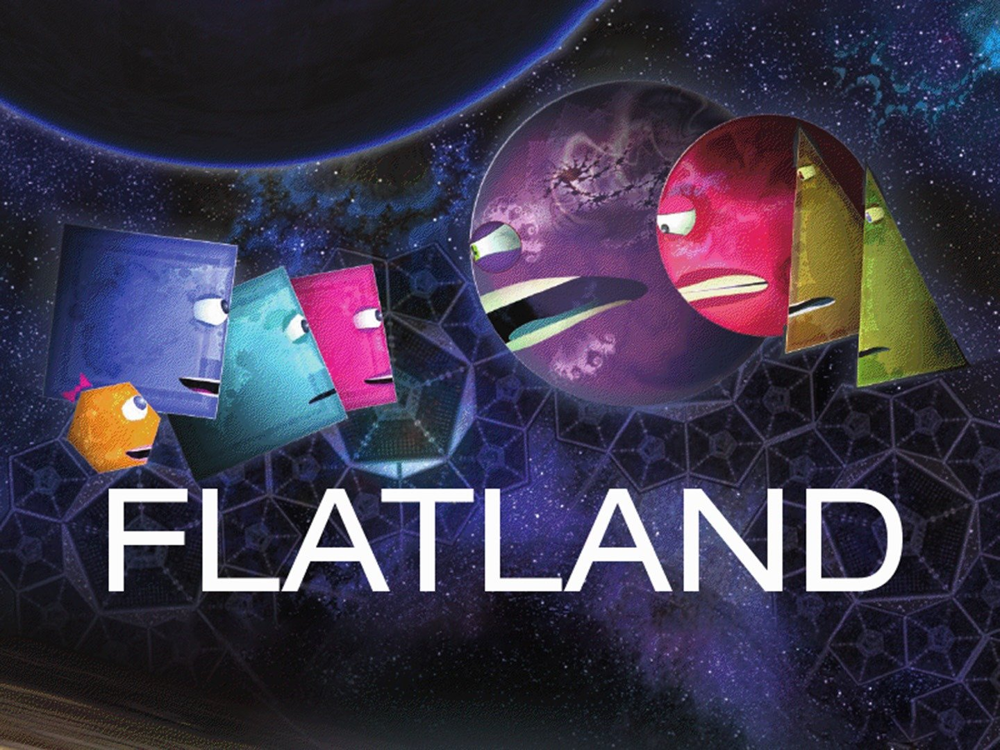

My name is Jayati (rhymes with homogeneity) and I’m a 2nd year ScM student in genetic epi. I have done undergraduate research in genetics using various statistical methods, and am most comfortable coding in R (& have been for the past 5ish years). I hope to learn more about making my work reproducible and how to take advantage of all the new and cool packages R offers, especially for dataviz!
Flatland, an 1884 book by Edwin Abbott later adapted to a movie, is about shape-based characters in an increasingly complicated world. It’s really about multi-dimensionality and complex math, but in a fun and fictional way.
